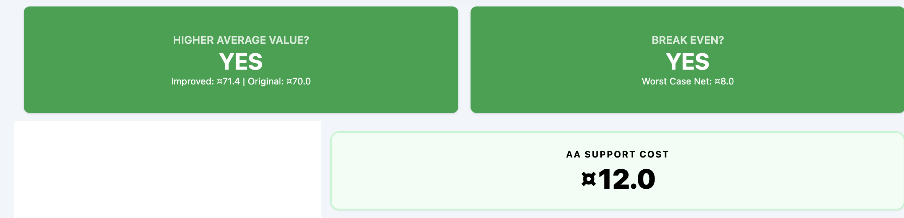
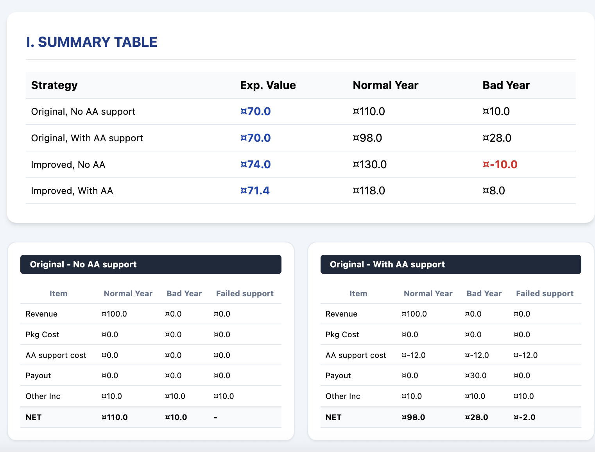
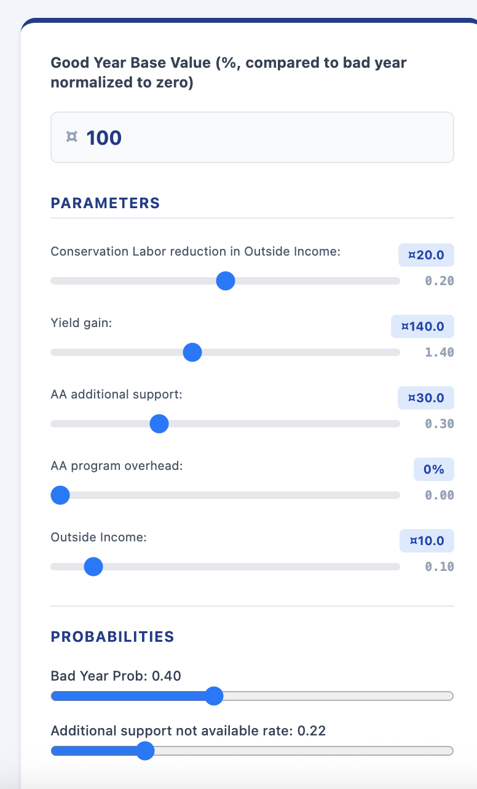
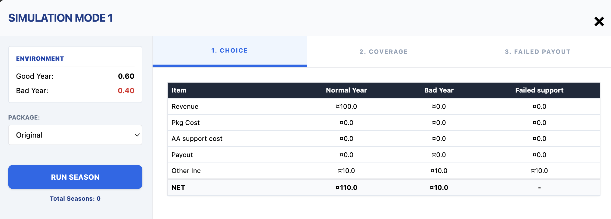

4b. Stress-Testing AA and Adaptation Under Climate Change (FR)
2. Analyse préliminaire du potentiel d'adaptation et de l'évaluation de l'impact
2.1 Guide de l'utilisateur de l'outil d'analyse de la portée
Accédez à l'outil ici : https://ccsfist.github.io/mrcs_scoping/
L'outil d'analyse préliminaire simule l'économie domestique d'un membre typique de la communauté qui doit décider comment investir dans l'adaptation. L'individu doit prendre des décisions concernant ses investissements dans les moyens de subsistance et l'atténuation des risques avant le début de la saison, qui a une certaine probabilité d'être soit une bonne année (au cours de laquelle il tire un bénéfice de son investissement dans les moyens de subsistance), soit une mauvaise année (au cours de laquelle il n'en tire aucun bénéfice). L'outil présente les résultats pour une bonne année et une mauvaise année, ainsi que le résultat moyen à long terme (c'est-à-dire la valeur attendue).
La structure de base de ce modèle économique est identique à celle présentée dans les scénarios de risque abordés hier. Cet outil simplifie légèrement le modèle de scénarios de risque, en regroupant les revenus non agricoles (par exemple, l'épargne, les solutions fondées sur la nature) dans une seule catégorie intitulée « revenus extérieurs » et en se concentrant sur l'analyse des conditions propices à une adaptation durable.
L'outil d'analyse préliminaire comporte trois parties. Le volet central présente les messages clés relatifs au modèle économique étudié. Les curseurs situés dans le volet de gauche permettent à l'utilisateur d'ajuster les paramètres du modèle économique et d'observer l'évolution des messages clés. Enfin, le bouton « Simuler la stratégie » permet à l'utilisateur d'intégrer les paramètres du modèle économique choisi dans un scénario de risque susceptible d'être présenté aux communautés, conformément à la structure évoquée hier.
Les messages clés

En haut de la page figurent les points clés concernant ce modèle économique. Le premier consiste à déterminer si investir dans l'amélioration des moyens de subsistance et (le cas échéant) dans une assurance permettrait d'obtenir un revenu moyen plus élevé. Le deuxième consiste à déterminer si le bénéficiaire disposerait d'un revenu suffisant pendant les mauvaises années pour atteindre le seuil de rentabilité. Le troisième concerne la prime d'assurance pour le contrat envisagé.

Sous les messages clés, le volet central présente un tableau récapitulatif des résultats pour chaque combinaison de stratégies : investir ou non dans des intrants améliorés, et souscrire ou non une assurance. Les tableaux ci-dessous fournissent une ventilation détaillée des coûts et des avantages pour chaque stratégie. Cela inclut le scénario dans lequel la récolte est mauvaise, mais où l'assurance ne verse pas d'indemnité (c'est-à-dire le risque de base).
Les paramètres du modèle économique

Le volet de gauche permet à l'utilisateur de modifier chacun des paramètres du modèle économique et d'observer l'évolution des résultats. Cette fonctionnalité peut être utilisée pour tester la sensibilité d'une théorie du changement donnée à diverses hypothèses. Le fonctionnement de chaque paramètre est décrit ci-dessous, en prenant comme exemple le scénario d'exploitation agricole par défaut : Valeur de référence d'une bonne année : Valeur des revenus générés par une bonne année de récolte, exprimée en unités monétaires locales. Ce chiffre détermine tous les autres chiffres utilisés dans le scénario. Sauf indication contraire, tous les autres paramètres sont exprimés en pourcentage de la valeur de référence (la valeur équivalente en unités monétaires étant indiquée en bleu au-dessus du curseur correspondant). Coût des intrants améliorés : Le coût des intrants améliorés. Gain de rendement : Augmentation des revenus lors d'une bonne année grâce à l'utilisation d'intrants de meilleure qualité. Indemnité type : Le montant de l'indemnité versée par l'assurance lors des mauvaises années. Frais de souscription : Coût supplémentaire lié à la souscription d'une assurance, tenant compte des frais et des coûts de capital. Exprimé en pourcentage de la prime de risque pur (c'est-à-dire le montant typique de l'indemnisation * la probabilité d'une mauvaise année). Économies externes : La valeur des sources de revenus non agricoles (qui peuvent inclure l'épargne, les solutions fondées sur la nature, etc.) Probabilité d'une année de mauvaises conditions météorologiques : La probabilité qu'une année soit marquée par de mauvaises conditions météorologiques. Probabilité de non-indemnisation : Probabilité que l'assurance ne verse pas d'indemnisation, à condition que l'année soit marquée par des conditions météorologiques défavorables.
Le simulateur de scénarios de risque

Pour traduire les paramètres du modèle économique choisi en un exercice de simulation pouvant être réalisé avec les communautés, cliquez sur le bouton « Simuler la stratégie » situé en bas à gauche de l'écran. Une fenêtre contextuelle « Simulation » s'affichera, comme celle ci-dessus. Cette simulation se déroule en trois manches, selon une version simplifiée de la structure évoquée hier. Chaque manche apporte un niveau supplémentaire de complexité aux choix auxquels le joueur est confronté. 1er tour : Choix – L'utilisateur décide s'il souhaite ou non contracter un emprunt pour investir dans des intrants de meilleure qualité. 2e étape : couverture - L'utilisateur doit faire face à deux choix : a) décider s'il souhaite ou non investir dans des intrants de meilleure qualité (comme lors de la 1re étape), et b) décider s'il souhaite ou non souscrire une assurance contre les aléas climatiques. 3e tour : absence de versement – Les mêmes choix qu'au 2e tour, mais avec une complexité supplémentaire : l'assurance peut ne pas verser d'indemnité lors de certaines années difficiles (risque de base). Utilisez les menus déroulants « Forfait » et « Assurance » situés à gauche pour basculer entre les différentes options proposées aux joueurs (investir dans les intrants ou non, souscrire une assurance ou non). Cliquez sur l'option « Simuler la saison » pour simuler les résultats d'une saison, en utilisant les probabilités d'une bonne ou d'une mauvaise année définies dans le volet « Paramètres » (affichées dans le coin supérieur gauche du volet « Simulation » à titre de référence). Des simulations répétées de la saison donneront lieu à des résultats différents. Cette fonctionnalité peut être utilisée pour simuler différentes possibilités lors des discussions sur les scénarios de risque avec les communautés. Pour passer d'une étape à l'autre, appuyez sur les boutons situés en haut au centre du volet. Pour fermer le volet Simulation, cliquez sur le X en haut à droite. Personnalisation de l'outil Vous pouvez modifier le texte figurant dans les champs de paramètres en passant la souris dessus, en supprimant le texte actuel et en saisissant le vôtre. Cela vous permet d'adapter le modèle économique à différents contextes, par exemple en remplaçant « agriculteurs » par « éleveurs ». Vous pouvez également personnaliser le titre et le texte du message clé. Pour enregistrer vos personnalisations ainsi que les valeurs des paramètres sélectionnés, cliquez sur le bouton « Enregistrer la version actuelle » situé en bas à gauche de l'écran. Cela vous permettra d'enregistrer la version personnalisée actuelle de l'outil d'analyse de périmètre sous forme de fichier .html.
2.2 Exploring & Refining Scoping Analysis
Using this framework, we can assess the enabling conditions for the community-led adaptation strategies we discussed on day 1.
This is a form of feasibility analysis for different adaptation options.